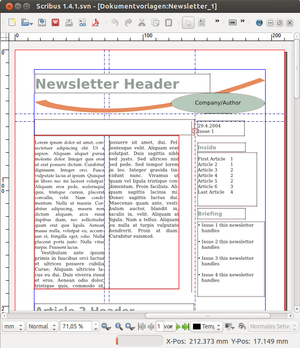

Scribus
Dieser Artikel wurde für die folgenden Ubuntu-Versionen getestet:
Ubuntu 16.04 Xenial Xerus
Ubuntu 14.04 Trusty Tahr
Zum Verständnis dieses Artikels sind folgende Seiten hilfreich:
Scribus  ist ein Desktop-Publishing-Programm für Linux-, Unix-, Mac-OS-X- und Windows-Systeme. Es dient der professionellen Erstellung von Layouts und ist vergleichbar mit Adobe PageMaker, QuarkXpress oder Adobe InDesign. Im Unterschied zu diesen proprietären Programmen ist Scribus freie Software und unter der GNU GPL lizenziert.
Scribus unterstützt eine Vielzahl von Funktionen, die für professionelle Druckvorlagen benötigt werden. Dazu zählen Farbmanagement, Farbseparation durch CMYK-Ausgabe, PDFs nach PDF/X-3 Standard, PDF-Import, Tabellen und Vektorzeichnungen. Scribus bietet dabei auch erweiterte PDF-Funktionalitäten wie Erstellung von PDF-Präsentationen und PDF-Formularen. Quelle: Wikipedia
ist ein Desktop-Publishing-Programm für Linux-, Unix-, Mac-OS-X- und Windows-Systeme. Es dient der professionellen Erstellung von Layouts und ist vergleichbar mit Adobe PageMaker, QuarkXpress oder Adobe InDesign. Im Unterschied zu diesen proprietären Programmen ist Scribus freie Software und unter der GNU GPL lizenziert.
Scribus unterstützt eine Vielzahl von Funktionen, die für professionelle Druckvorlagen benötigt werden. Dazu zählen Farbmanagement, Farbseparation durch CMYK-Ausgabe, PDFs nach PDF/X-3 Standard, PDF-Import, Tabellen und Vektorzeichnungen. Scribus bietet dabei auch erweiterte PDF-Funktionalitäten wie Erstellung von PDF-Präsentationen und PDF-Formularen. Quelle: Wikipedia
Installation¶
Scribus ist in zwei Versionen in den Paketquellen enthalten: einmal eine stabile und bewährte Version und einmal eine Entwicklungsversion.

Für den stabilen Zweig stehen folgende Pakete zur Installation [1] zur Verfügung:
scribus
scribus-doc (optional - Dokumentation)
scribus-template (universe - zahlreiche Dokumentenvorlagen)
 mit apturl
mit apturl
Paketliste zum Kopieren:
sudo apt-get install scribus scribus-doc scribus-template
sudo aptitude install scribus scribus-doc scribus-template
Wer die aktuelle Entwicklerversion herunterladen und ausprobieren will, findet im Wiki des Projekts  eine Anleitung zum Kompilieren aus dem Quelltext.
eine Anleitung zum Kompilieren aus dem Quelltext.
Funktionen und Features¶
Scribus ist ein professionelles Layout-Programm und bietet viele hunderte Funktionen, die man in diesem Wiki-Eintrag nicht alle aufführen kann. Wenn man das Programm am Anfang startet, so begrüßt einem gleich ein Begrüßungsbildschirm, der einen auffordert, ein neues Projekt zu erstellen oder ein bereits erstelltes Projekt aus Scribus zu laden. Diese Funktionen bieten außerdem einige Vorlagen für Visitenkarten oder kleine Produktbroschüren. Auch hier bietet Scribus vielfältige Einstellungsmöglichkeiten, z.B Ränder bestimmen und vieles mehr.
Formen kann man auch relativ einfach mit Scribus erstellen: Farben, Verläufe, Bilder anpassen ist auch kein Problem mehr. Ein extra "Eigenschaften-Fenster" bietet weitere Einstellungen, die professionelles Layout-Design ermöglicht, auf Augenhöhe von QuarkPress und Indesign. Die Farbenspeicherung wird auch sehr pfiffig gelöst. In einem extra Dialog-Fenster kann man Farben hinzufügen und selbst erstellen. Die erstellten Farben können dann in einer Extra-Datei exportiert werden und bei einem anderen Dokument in Scribus wieder importiert werden.
Dokumente importieren¶
Das Importieren von .odt-Dateien funktioniert ohne Verluste. Das Importieren von Worddateien ist auch möglich, nur die Formatierung geht verloren (z. B. dicke geschriebene Texte werden nicht mehr dick geschrieben dargestellt). Dieses Fehlverhalten kann man umgehen, indem man den Wordtext in LibreOffice oder OpenOffice importiert (dabei geht die Formatierung nicht verloren) und dann als neutrales Format abspeichern (also .odt). So kann man auch MS-Word-Texte ohne Verluste in Scribus-Textformen einfügen.
Schriften einbinden¶
Im Regelfall sollten die Systemschriftarten vollständig erkannt werden. Sollte dies nicht der Fall sein, kann man diese noch nachträglich innerhalb von Scribus einbinden. Hierzu ruft man im Menü
"Datei -> Allgemeine Einstellungen -> Schriften"
auf und kann unter dem Reiter "Zusätzliche Pfade" weitere Verzeichnisse angeben, die weitere gewünschten Schriftarten beinhalten. Zu beachten ist, dass in Scribus kein Dokument geöffnet ist bzw. geöffnet wurde. Man muss also gegebenenfalls Scribus neustarten, bevor man hier eine Änderung vornehmen kann. Auch zum Übernehmen der Einstellungen sollte man Scribus neustarten, da sonst die Schriftarten noch nicht verwendet werden können.
Hinweis:
Scribus verwendet einen Filter, der untaugliche Schriftarten automatisch deaktiviert. Hierzu bitte die offizielle Dokumentation aufsuchen.
Scribus mit Color-Management ausrüsten¶
Farbmanagement ist dann wichtig, wenn man möchte, dass Farben auf allen Endgeräten weitgehend gleich aussehen, also beispielsweise das Blau auf dem Flyer aus der Druckerei genau dem Blauton entspricht, den man am Bildschirm dafür ausgesucht hatte. Um weitgehende Farbtreue zu gewährleisten, muss das Farbmanagement an zwei Stellen korrigierend eingreifen:
Einerseits ist es nötig, die Farben entsprechend der durch Konstruktionsunterschiede bedingten Darstellungseigenschaften des Ausgabegerätes anzupassen. Die dazu nötige gerätespezifische Information ist in - auf das Endgerät abgestimmten - ICC-Geräteprofilen abgelegt, die im Idealfall beispielsweise auf der Treiber-CD des Bildschirms oder Druckers vom Hersteller mitgeliefert werden oder von dessen Webseite heruntergeladen werden können. Liegt für das Peripheriegerät kein Geräteprofil vor, kann es selbst gemessen werden oder auf ein Profil zurückgegriffen werden, von dem vermutet wird, dass es dem wirklichen Profil nahekommt.
Andererseits unterscheiden sich Bildschirm und Druckmaschine in ihrem verwendeten Farbmodell. Der Bildschirm mischt Farben additiv aus den Grundfarben Rot Grün und Blau, Drucker arbeiten mit subtraktiver Farbmischung und meistens mit CMYK (aus den Grundfarben Türkis, Violett, Gelb und Schwarz). Wenn Farbinformation also am Bildschirm "erstellt", aber farbtreu im Druck wiedergegeben werden soll, muss das Farbmanagement diese vom RGB-Farbraum für den Druck in den CYMK-Farbraum konvertieren.
Die Verwendung des Farbmanagements ist also sehr empfehlenswert, um verlässliche Farbresultate zu erhalten. Scribus ist in der "Mehr-Fenster-Technik" aufgebaut, wie zum Beispiel auch Gimp, also man arbeitet mit mehreren Fenstern, die bestimmte Aufgaben übernehmen. Diese Fenster kann man ein- und ausblenden, um nur das wesentliche im Blick zu haben.
Um Scribus mit Farbmanagement nutzen zu können, genügt die Installation des Pakets
icc-profiles (multiverse)
mit apturl
Paketliste zum Kopieren:
sudo apt-get install icc-profiles
sudo aptitude install icc-profiles
Um die aktuelle Version zu erhalten, kann man auch direkt die Scribus-Paketquelle als Fremdquelle hinzufügen.
Hinweis!
Zusätzliche Fremdquellen können das System gefährden.
Folgende ICC-Profile existieren nach der Installation:
/usr/share/color/icc/PhotoGamutRGB_avg6c.icc /usr/share/color/icc/ISOuncoatedyellowish.icc /usr/share/color/icc/ISOwebcoated.icc /usr/share/color/icc/ECI-RGB.V1.0.icc /usr/share/color/icc/ISOcoated.icc /usr/share/color/icc/ISOuncoated.icc /usr/share/color/icc/LStar-RGB.icc
Diese Standardprofile reichen für die Gelegenheitsverwendung von Scribus aus. Man kann natürlich weitere Profile dort hinterlegen oder in den Scribus-Einstellungen einen Pfad eintragen, unter dem zusätzliche Profile hinterlegt sind.
Es ist sehr empfehlenswert, zumindest ein spezielles Profil einzubinden: das des Monitors. Es befindet sich (sofern vorhanden) auf der Treiber-CD des Monitors (Datei mit der Endung *.icm oder *.icc). Wenn der Hersteller kein spezielles Monitor-Profil zur Verfügung stellt, muss das sRGB Standard-Profil für "Monitor" in den Scribus-Einstellungen
"Datei -> Allgemeine Einstellungen -> Farbmanagement"
genügen. Nun kann man Scribus starten und folgende globalen Einstellung vornehmen. Dazu im Menü "Datei -> Allgemeine Einstellungen -> Farbmanagement" aufrufen und hier:
"Farb-Management aktivieren",
die gewünschten Profile auswählen und
bei "Druckerfarben auf dem Bildschirm simulieren" und "Tiefenkompensierung benutzen" Häkchen setzen.
Der Rest kann im Zweifelsfall so bleiben. Das Farb-Management kann auch je Dokument extra festgelegt werden:
"Datei -> Dokument einrichten -> Farbmanagement".
Hat man vergessen, das Colormanagement für das aktuelle Dokument zu aktivieren, dann ist im PDF-Erstellen-Dialog der Reiter "PDF/X-3" ausgegraut, und die Kompatibilitäts-Option "PDF/X-3" ist nicht verfügbar, sondern nur "PDF 1.3" bis "PDF 1.5".
Links¶
Scribus Special Edition
 (PDF) – Sonderausgabe des Full Circle Magazins, 02/2012
(PDF) – Sonderausgabe des Full Circle Magazins, 02/2012Seiten-Teil - Scribus 1.3.3 im Praxiseinsatz – LinuxUser, 08/2009
Scribus Tutorial Video
– Community Screencast, 2007Scribus Workshop
Youtube-Video mit Matthias Baran auf der Ubucon 2014Individuelle Fotobücher und Kunstposter mit Scribus gestalten
– Heise Online, 11/2006Wikipedia: Scribus, Farbmanagement
- Erstellt mit Inyoka
-
 2004 – 2017 ubuntuusers.de • Einige Rechte vorbehalten
2004 – 2017 ubuntuusers.de • Einige Rechte vorbehalten
Lizenz • Kontakt • Datenschutz • Impressum • Serverstatus -
Serverhousing gespendet von